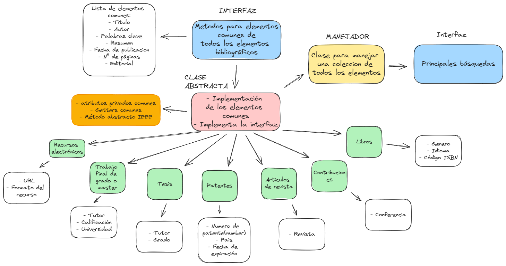
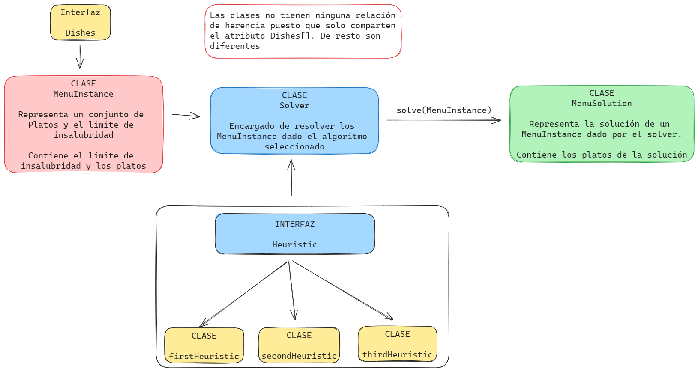

💻 Práctica 5 - Objetos, clases e interfaces 💻

Introducción
En esta práctica, nos enfocaremos en realizar ejercicios que profundicen nuestro entendimiento sobre interfaces, clases y objetos en TypeScript. Además, exploraremos herramientas como Istanbul y Coveralls.
Istanbul, también conocido como nyc, se utiliza como un instrumentador de código en JavaScript, facilitando el seguimiento de las líneas ejecutadas durante las pruebas unitarias.
Por otro lado, Coveralls es un servicio en línea que aprovechamos para analizar y visualizar informes de cobertura generados por herramientas como Istanbul.
Es fundamental recordar que, antes de comenzar con los ejercicios, debemos configurar un entorno de trabajo adecuado. Puedes encontrar información detallada sobre cómo hacerlo aquí
Además, incorporaremos pruebas unitarias con Mocha y Chai, así como la generación automática de documentación. Para obtener más detalles y aprender a configurar tanto TypeDoc como Mocha y Chai, puedes consultar este link
Resolución de los ejercicios
Gestor de referencias bibliográficas
La idea en esta practica es crear un pequeño gestor de referencias bibliográficas donde vamos a tener distintos objetos tales como libros, recursos electronicos, trabajos de fin de grado y demás. Pero antes de empezar a ver el código en mi caso he realizado un pequeño esquema en la web app Excalidraw de como será nuestra estructura y las relaciones entre los objetos.

En primer lugar, es crucial considerar que los objetos que se almacenarán en nuestro gestor serán diversos entre sí, aunque compartirán atributos comunes. En este contexto, he creado una interfaz BibliographicElement y la he implementado en la clase abstracta, la cual será heredada por todos los objetos de nuestro gestor bibliográfico.
export interface BibliographicElement {
getTitle(): string;
getAuthors(): string[];
getKeywords(): string[];
getAbstract(): string;
getPublicationDate(): Date;
getPages(): string;
getEditorial(): string;
getIEEECitation(): string;
}
Con este "modelo" de los objetos ya tenemos la base para crear la clase abstracta
export abstract class BibliographicElementObject
implements BibliographicElement
{
constructor(
private title: string,
private authors: string[],
private keywords: string[],
private abstract: string,
private publicationDate: Date,
private pages: string,
private editorial: string,
) {}
public getTitle(): string {
return this.title;
}
public getAuthors(): string[] {
return this.authors;
}
public getKeywords(): string[] {
return this.keywords;
}
public getAbstract(): string {
return this.abstract;
}
public getPublicationDate(): Date {
return this.publicationDate;
}
public getPages(): string {
return this.pages;
}
public getEditorial(): string {
return this.editorial;
}
abstract getIEEECitation(): string;
}
Observamos que el único método abstracto presente en la clase abstracta será la forma de obtener el resultado en formato IEEE para cada tipo de objeto. En este caso, he consultado esta referencia para entender la estructura del formato según el tipo de objeto en cuestión.
Un ejemplo de los objetos que vamos a extender de esta clase podría ser:
export class Book extends BibliographicElementObject {
constructor(
title: string,
authors: string[],
keywords: string[],
abstract: string,
publicationDate: Date,
pages: string,
editorial: string,
private genre: string,
private language: string,
private ISBN: string,
private city: string,
private country: string,
) {
super(
title,
authors,
keywords,
abstract,
publicationDate,
pages,
editorial,
);
}
public getGenre(): string {
return this.genre;
}
public getLanguage(): string {
return this.language;
}
public getISBN(): string {
return this.ISBN;
}
public getCity(): string {
return this.city;
}
public getCountry(): string {
return this.country;
}
public getIEEECitation(): string {
// Format: [1] A. Author, "Title of chapter in the book," in Title of His Published Book, xth ed. City of Publisher, (only U.S. State), Country: Publisher, year, ch. x, sec. x, pp. xxx-xxx.
const authors = this.getAuthors().join(" and ");
return `${authors}, "${this.getTitle()}", ${this.getCity()}, ${this.getCountry()}: ${this.getEditorial()}, ${this.getPublicationDate().getFullYear()}, pp. ${this.getPages()}.`;
}
}
Podemos observan que solo se añaden los getters para los nuevos atributos, y además se implementa el método abstracto declarado en la clase padre.
Esto lo hacemos para las clases Book, ConferenceContribution, ElectronicResource, FinalProject, JournalArticle, Patent y Thesis. Como podemos observar, con estra estructura podemos hacer que los objetos que va a contener nuestro gestor sea lo mas escalable posible.
Según lo representado en el esquema, tendremos una clase capaz de gestionar todos estos objetos y realizar filtrados de búsquedas mediante diversas métricas. En cuanto al aspecto de las búsquedas, he optado por modelarlo utilizando la interfaz BibliographicSearch.
export interface BibliographicSearch {
searchByKeyword(keyword: string, IEEE?: boolean): void;
filterByTitle(title: string, IEEE?: boolean): void;
filterByAuthors(authors: string[], IEEE?: boolean): void;
filterByPublicationDate(date: Date, IEEE?: boolean): void;
filterByEditorial(editorial: string, IEEE?: boolean): void;
}
Una opción que podríamos haber considerado para hacer nuestro modelo de búsqueda más escalable sería la implementación de una interfaz maestra que incluyera todas las demás interfaces (cada interfaz sería un tipo de busqueda distinto).
Esta interfaz se la implementamos al manejador que en este caso será BibliographicManager
export class BibliographicManager implements BibliographicSearch {
private bibliographicElements: BibliographicElementObject[] = [];
constructor(elements?: BibliographicElementObject[]) {
if (elements) {
this.bibliographicElements = elements;
}
}
public addElement(element: BibliographicElementObject): void {
this.bibliographicElements.push(element);
}
public removeElement(title: string): void {
this.bibliographicElements = this.bibliographicElements.filter(
(element) => element.getTitle() !== title,
);
}
public searchByKeyword(keyword: string, IEEE?: boolean): void {
const elements = this.bibliographicElements.filter((element) =>
element.getKeywords().includes(keyword),
);
if (IEEE) {
this.IEEEFormat(elements);
} else {
console.table(elements);
}
}
public filterByTitle(title: string, IEEE?: boolean): void {
const elements = this.bibliographicElements.filter(
(element) => element.getTitle() === title,
);
if (IEEE) {
this.IEEEFormat(elements);
} else {
console.table(elements);
}
}
public filterByAuthors(authors: string[], IEEE?: boolean): void {
const elements = this.bibliographicElements.filter((element) =>
element.getAuthors().some((author) => authors.includes(author)),
);
if (IEEE) {
this.IEEEFormat(elements);
} else {
console.table(elements);
}
}
public filterByPublicationDate(date: Date, IEEE?: boolean): void {
const elements = this.bibliographicElements.filter(
(element) => element.getPublicationDate() === date,
);
if (IEEE) {
this.IEEEFormat(elements);
} else {
console.table(elements);
}
}
public filterByEditorial(editorial: string, IEEE?: boolean): void {
const elements = this.bibliographicElements.filter(
(element) => element.getEditorial() === editorial,
);
if (IEEE) {
this.IEEEFormat(elements);
} else {
console.table(elements);
}
}
private IEEEFormat(): void {
const elementsIEEE = element.map((element) => {
return {
IEEE_Format: element.getIEEECitation(),
};
});
console.table(elementsIEEE);
}
displayElements(): void {
console.table(this.bibliographicElements);
}
}
Podemos ver como se implementan dentro de la clase las distintas búsquedas y meétodo para añadir y eliminar elementos, principalmente BibliographicHandler almacena un array dinámico de BibliographicElementObject. A parte tenemos el método IEEEFormat privado donde podemos obtener los objetos en formato IEEE.
Menús saludables orientados a objetos
La finalidad de este ejercicio consiste en automatizar la creación de un menú saludable. Para lograrlo, al igual que en el ejercicio anterior, he elaborado un esquema que facilitará la comprensión detallada del ejercicio y nos permitirá enfocarnos en la problemática.

En primera instancia vamos a modelar lo que sería un plato, eso lo hacemos con la interfaz Dish
export interface Dish {
name: string;
nutritionalScore: number;
unhealthinessScore: number;
}
Con tres atributos será suficiente para este ejercicio. Estos platos formarán parte de una instancia del problema, y esta instancia la modelaremos mediante una clase denominada MenuInstance.
export class MenuInstance {
constructor(private data: Dish[], private maxUnhealthiness: number) {}
getDishes(): Dish[] {
return this.data;
}
getMaxUnhealthiness(): number {
return this.maxUnhealthiness;
}
}
Vemos que en esta clase lo que vamos a tener será el conjunto de platos y un maximo de insalubridad junto a sus respectivos getters.
Ahora, con todos estos elementos, requeriremos algo que resuelva el problema, y esa tarea será desempeñada por la clase Solver. No obstante, antes es necesario abordar las diversas heurísticas que utilizará la clase para resolver el problema.
Para las heuristicas he decidido modelarlas con otra interfaz llamada Heuristic:
export interface Heuristic {
solve(data: Dish[]): Dish[];
}
Al final se implementará un método llamado solve() que tome un conjunto de platos (Dish) y devuelva el conjunto de platos con la heurística aplicada. Esto nos permitirá escalar la cantidad de heurísticas sin dificultad. Por lo tanto, las heurísticas que desarrollaremos deberán seguir esta interfaz. A modo de ejemplo, la primera heurística se estructuraría de la siguiente manera:
export class FirstHeuristic implements Heuristic {
solve(data: Dish[]): Dish[] {
return data.sort((a, b) => b.nutritionalScore - a.nutritionalScore);
}
}
Retomando con la clase Solver, he decidido implementarla utilizando el patrón 'Estrategia' asignando de manera dinámica el método de resolución que vamos a utilizar, entonces la clase se nos queda de la siguiente manera:
export enum ALGORITHM_TYPE {
FIRST,
SECOND,
THIRD,
}
export class Solver {
private heuristic?: Heuristic;
constructor(
private algorithm: ALGORITHM_TYPE,
) {
this.logic();
}
private logic(): void {
switch (this.algorithm) {
case ALGORITHM_TYPE.FIRST:
this.heuristic = new FirstHeuristic();
break;
case ALGORITHM_TYPE.SECOND:
this.heuristic = new SecondHeuristic();
break;
case ALGORITHM_TYPE.THIRD:
this.heuristic = new ThirdHeuristic();
break;
default:
throw new Error("No valid algorithm");
}
}
solve(menu: MenuInstance): MenuSolution {
const sortedDishes = this.heuristic?.solve(menu.getDishes()) as Dish[];
let unhealthiness = 0;
const dishes: Dish[] = [];
sortedDishes.forEach((dish) => {
if (unhealthiness + dish.unhealthinessScore <= menu.getMaxUnhealthiness()) {
unhealthiness += dish.unhealthinessScore;
dishes.push(dish);
}
});
return new MenuSolution(dishes);
}
}
Observamos que seleccionamos el algoritmo mediante el uso de un tipo enum para hacerlo mucho más conveniente. Asimismo, elegimos la heurística a utilizar dentro de la función logic(). Al emplear el método solve() y proporcionar una instancia de MenuInstance como parámetro, podremos obtener la solución del menú según la heurística asignada al Solver.
Las soluciones se representarán mediante el tipo de objeto MenuSolution. Dado que los objetivos de las clases MenuInstance y MenuSolution son bastante distintos, he optado por no establecer una relación de herencia entre ellas.
export class MenuSolution {
private totalNutritionalScore: number = 0;
private totalUnhealthinessScore: number = 0;
constructor(private dishes: Dish[]) {
this.totalNutritionalScore = dishes.reduce((acc, dish) => acc + dish.nutritionalScore, 0);
this.totalUnhealthinessScore = dishes.reduce((acc, dish) => acc + dish.unhealthinessScore, 0);
}
getDishes(): Dish[] {
return this.dishes;
}
getTotalNutritionalScore(): number {
return this.totalNutritionalScore;
}
getTotalUnhealthinessScore(): number {
return this.totalUnhealthinessScore;
}
display(): void {
console.log(`Puntuación nutricional total: ${this.totalNutritionalScore}`);
console.log(`Puntuación de falta de salud total: ${this.totalUnhealthinessScore}`);
console.table(this.dishes);
}
}
Como podemos ver, la clase está orientada a mostrar información sobre la solución, tenemos algunos getters y un método display() para mostrar toda la información de una manera mas cómoda del menú por terminal.
Modificacion 1
El propósito de este ejercicio es desarrollar una función para determinar si las reinas en un tablero de ajedrez pueden atacarse mutuamente. Con este fin, he optado por crear un objeto llamado chessBoard, que actuará como un 'tablero' de ajedrez. Este objeto se comportará como un array estático con el tipo de datos "-|"|"N"|"B", por lo tanto, solo se aceptarán esos caracteres dentro de la tabla ahorrandonos comprobaciones extra. Además este objeto tiene métodos extra para meter reinas, ver el tablero y restablecer el mismo.
export const chessBoard = {
board: Array.from({ length: 8 }, () => new Array<"-"|"N"|"B">(8)),
printBoard: function() {
console.table(this.board);
},
setQueens: function(whiteQueen?: [number, number], blackQueen?: [number, number]) {
// Comprobar que los números son válidos y además no son iguales
if (whiteQueen && (whiteQueen[0] < 0 || whiteQueen[0] > 7 || whiteQueen[1] < 0 || whiteQueen[1] > 7) && whiteQueen !== blackQueen) {
undefined
}
if (whiteQueen) {
this.board[whiteQueen[0]][whiteQueen[1]] = "B";
}
if (blackQueen) {
this.board[blackQueen[0]][blackQueen[1]] = "N";
}
},
reset: function() {
this.board.forEach((row) => {
row.fill("-", 0, 8);
});
}
}
Teniendo el objeto chessBoard, podemos desarrollar la función checkAttack(). En esta función, primero verificamos la existencia de dos reinas y que además sean únicas para cada color; con estas comprobaciones sería suficiente para comenzar.
Después de las verificaciones, simplemente detectamos las posiciones de las reinas de cada color. Las reinas pueden moverse en diagonal y a lo largo de toda la fila o columna en la que se encuentren. Por lo tanto, el problema real se reduce a las diagonales, que se resuelven fácilmente utilizando el valor absoluto de sus columnas y filas.
export function checkAttack(table: string[][]) {
if (table.find(row => row.includes("B")) === undefined || table.find(row => row.includes("N")) === undefined) {
return undefined
}
if (table.filter(row => row.includes("B")).length > 1 || table.filter(row => row.includes("N")).length > 1) {
return undefined;
} else {
const whiteQueen = [table.findIndex(row => row.includes("B")), (table.find(row => row.includes("B")) as string[]).indexOf("B")];
const blackQueen = [table.findIndex(row => row.includes("N")), (table.find(row => row.includes("N")) as string[]).indexOf("N")];
if (whiteQueen[0] === blackQueen[0] || whiteQueen[1] === blackQueen[1] || Math.abs(whiteQueen[0] - blackQueen[0]) === Math.abs(whiteQueen[1] - blackQueen[1])) {
return true;
} else {
return false;
}
}
}
Modificacion 1
La idea de este ejercicio es crear un pequeño sistema de parking, donde tenemos dos objetos Car y Bike que se extienden de la clase Vehicle. Los coches y las motos tienen caracteristicas similares en ciertos aspectos, sobretodo en la identificación por lo que relacionarla entre ellas es una buena idea.
La clase Vehicle será una clase abstracta que contiene los métodos comunes para todo tipo de vehículo.
export abstract class Vehicle implements VehicleInterface {
private id: string;
private brand: string;
private model: string;
private year: number;
constructor(id: string, brand: string, model: string, year: number) {
this.id = id;
this.brand = brand;
this.model = model;
this.year = year;
}
getID(): string {
return this.id;
}
getBrand(): string {
return this.brand;
}
getModel(): string {
return this.model;
}
getYear(): number {
return this.year;
}
}
Para gestionar el estacionamiento en sí, he optado por utilizar una clase llamada ParkingHandler encargada de administrar las plazas del mismo. Existe un límite para la cantidad de coches y motos distintos, y es crucial tenerlo en cuenta al agregar vehículos al estacionamiento.
En mi enfoque, la idea fue tener un array para cada tipo de vehículo, lo que permite gestionar de manera individual la cantidad de vehículos de cada tipo. Además, se cuenta con un array de registros que contiene todos los vehículos. Estos registros consistirán simplemente en una tupla del vehículo en cuestión y la hora de entrada. Y lo que mostramos por pantalla sería ese vector de registros con el método printStatus()
export type registerVehicle = [Vehicle, Date];
export class ParkingHandler {
private numCars: number = 100;
private numBikes: number = 25;
private cars: Car[] = [];
private bikes: Bike[] = [];
private register: registerVehicle[] = [];
constructor() {
}
public addVehicle(vehicle: Vehicle, date: Date): boolean {
// Dependiendo del tipo de vehículo, se añade al array correspondiente
if (vehicle instanceof Car && this.cars.length < this.numCars) {
this.cars.push(vehicle);
this.register.push([vehicle, date]);
return true;
} else if (vehicle instanceof Bike && this.bikes.length < this.numBikes) {
this.bikes.push(vehicle);
this.register.push([vehicle, date]);
return true;
}
return false;
}
public removeVehicle(vehicle: Vehicle): boolean {
// Comprobamos que su registro exista
if (!this.register.find((register) => register[0].getID() === vehicle.getID())) {
return false;
}
// Dependiendo del tipo de vehículo, se elimina del array correspondiente
if (vehicle instanceof Car) {
this.cars = this.cars.filter((car) => car.getID() !== vehicle.getID());
return true;
} else if (vehicle instanceof Bike) {
this.bikes = this.bikes.filter((bike) => bike.getID() !== vehicle.getID());
return true;
}
return false;
}
public printStatus(): void {
console.table(this.register.map(([vehicle, date]) => ({
ID: vehicle.getID(),
Type: vehicle instanceof Car ? 'Car' : 'Bike',
Brand: vehicle.getBrand(),
Model: vehicle.getModel(),
Arrived: date.toISOString(),
})));
}
};
Hice un par de pruebas rápidas en el archivo ejercicio-2.ts pero no me dió tiempo a mas.
Configuración y uso de Istanbul y Coverall
Para poder utilizar Istanbul(conocido también como nyc) en nuestro proyecto primeramente vamos a tener que añadir el paquete al mismo, esto lo hacemos con el comando:
npm install --save-dev nyc
Además tenemos que añadir un pequeño script en nuestro package.json para poder ejecutar esta herramienta
"coverage": "nyc npm test"
Lo que estamos haciendo aquí es ejecutar nuestro script de testing con el programa nyc, de esta forma nos dará por consola un análisis de la cobertura de los test realizados con respecto al código fuente de nuestro programa.
Para utilizar Coveralls, inicialmente es necesario tener el proyecto en un repositorio de GitHub, ya que esta herramienta funciona en la nube. Además, es importante que el repositorio sea público para poder aprovechar la funcionalidad de la herramienta de forma gratuita.
Una vez tengamos lo anterior resuelto vamos a tener que instalar una dependencia en nuestor proyecto, lo haremos con:
npm install --save-dev coveralls
Posteriormente, será necesario iniciar sesión en la herramienta en nuestro navegador utilizando nuestra cuenta de GitHub. Una vez iniciada la sesión, nos dirigimos a la sección de Add repo y añadimos nuestro repositorio. Luego, nos dirigimos a otra sección llamada Repos, donde podremos visualizar el repositorio recién añadido. Dentro de este repositorio, encontraremos una sección que mostrará algo similar a repo_token seguido de un número.
Una vez obtenido el token, procedemos a crear un archivo de configuración con el nombre .coveralls.yml en la raíz de nuestro proyecto, añadiendo el token:
repo_token: XXXXXXX
Para finalizar simplemente tenemos que modificar nuestro script para que sea de la forma:
"coverage": "nyc npm test && nyc report --reporter=text-lcov | coveralls && rm -rf .nyc_output"
Con esto vamos a realizar el informe de Istanbul en un formato especial el cual Coveralls lo analizará y lo subirá al apartado de Repos donde podemos ver mas información.
Conclusión
A través de la manipulación y creación de clases de los distintos ejercicios, pude comprender cómo estructurar y organizar el código de manera más efectiva. La implementación de interfaces proporciona una herramienta valiosa para definir "contratos" y asegurar una mayor coherencia en la estructura del programa.
Además que el uso de la herramienta Istanbul la considero muy útil y realmente interesante de aprender. Una practica esencial cuando pretendemos conocer un nuevo lenguaje.